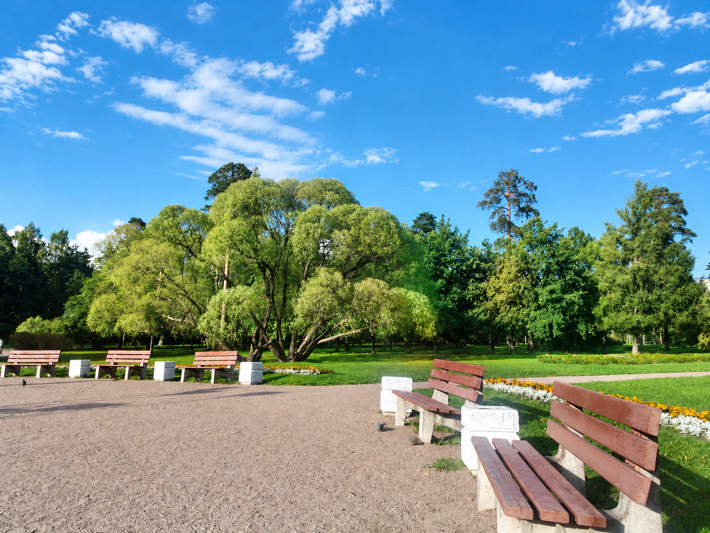

История парка — очень давняя. Вплоть до конца XIX века на территории нынешней Сосновки располагался обширный лес, простиравшийся на восток.
Обширный лес решил приобрести Владимир Александрович Ратьков-Рожнов — русский общественный деятель, предприниматель и промышленник, сенатор, действительный тайный советник, городской голова.
Приобретенный лес по наследству достался детям: Ананию и Ольге. Брат получил северные земли, сестра — южные. Ананий, унаследовавший от отца его предприимчивость, тут же занялся перепланировкой своих владений. Прорубленные аллеи предполагалось вскоре сделать улицами дачного района. Однако грянувшая революция нарушила все планы Анания Владимировича. Но расположенные в юго-восточной части парка аллеи до сих пор напоминают о его давних замыслах.
В шестидесятых годах XIX века при застройке района «Шувалово-Озерки» решено было оставить огромную часть лесопарка, который тут же окрестили Сосновским. В 1968 году он получил официальное название и статус городского парка Сосновка.
Сейчас парк всегда оживлён. А когда-то это была глухая местность на окраине города. Историки утверждают, что именно тут Михаил Юрьевич Лермонтов стрелялся с сыном французского посла, Эрнестом де Барантом.
Бескровная дуэль имела для Михаила Юрьевича роковое значение. Он был выслан из Петербурга на Кавказ, где жизнь его трагически оборвалась. Историки потом долго спорили, из-за чего произошла ссора между молодыми людьми — из-за насмешки Лермонтова над чувствами к знакомой ему женщине или же из-за небрежного высказывания Баранта о смерти Александра Сергеевича Пушкина.
Но что бы ни послужило причиной дуэли, последствия её трагически изменили жизнь молодого поэта.